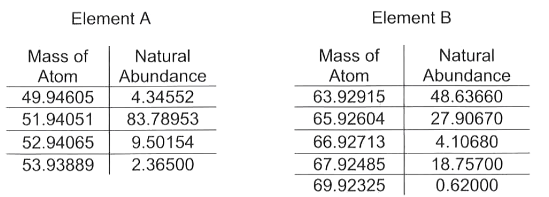
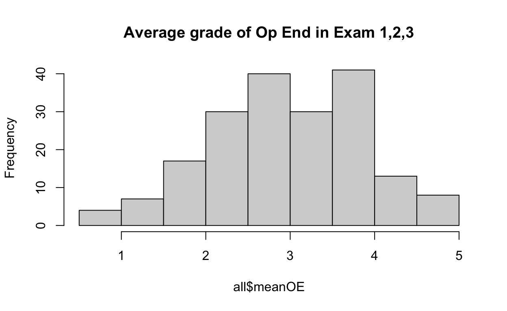
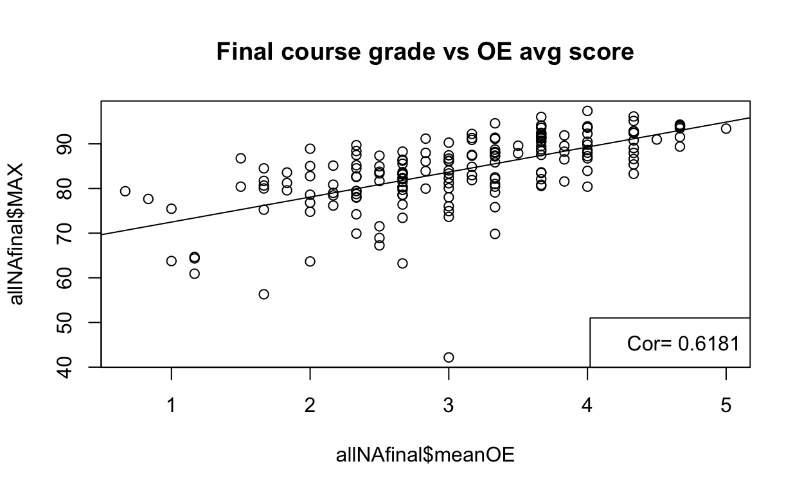
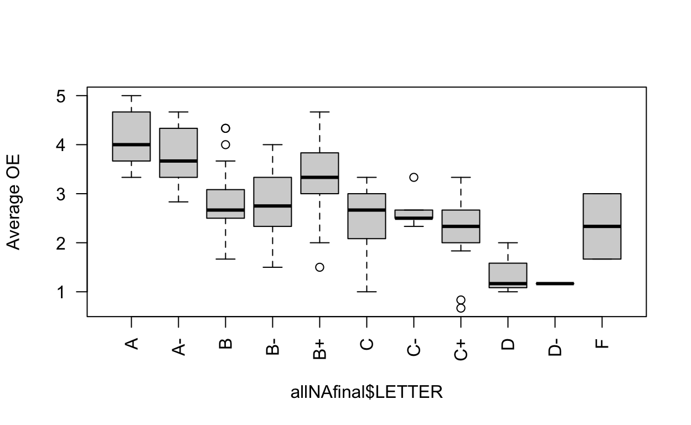
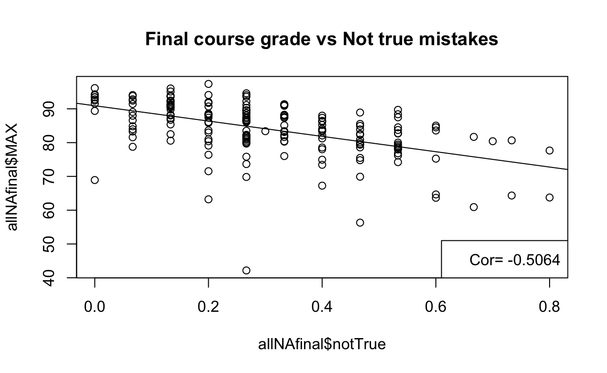
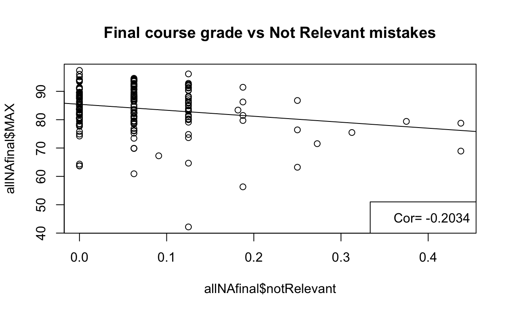

Analysis of asking students to name 5 relevant statement pertinent to a topic
The following data was collected during the fall semester of 2019 from a cohort of about 200 first-year students taking a first-year chemistry semester. We are analyzing here the results of implementing the open ended assessments as they had been described in “Establishing open-ended assessments: investigating the validity of creative exercises” SE Lewis, JL Shaw, KA Freeman - Chem. Educ. Res. Pract., 2011, 12, 158-166 (https://doi.org/10.1039/C1RP90020J)
During these “open Ended questions” (OE) students are asked to name 5 relevant statements about a topic. Students had practiced similar questions at the beginning of each class session. During the three semester exams they were asked to name five relevant things about certain topics. For example:

Exam 2: Make 5 relevant and true statements about the organic compound shown below. CH3CH(CH3)CH2CHO
Exam 3: Given three skeletal structures of biomolecules “Make 5 relevant and true statements about the three molecules below”
Let’s load the data and clean it up a little bit. All the information is in the “all” dataframe
setwd("~/Gd/Research/OpenEnded5relevantThings/")
#Load grades
grades <- read.csv("./chem1331grades_f19_new.csv",header=TRUE)
#load gradescope results for Exam1, 2, and 3
opend1 <- read.csv("./Ex1_f19_1_5_things.csv",header=TRUE)
opend2 <- read.csv("./Ex2_f19_1_5_Things.csv",header=TRUE)
opend3 <- read.csv("./Ex3_f19_1_5_Things.csv",header=TRUE)
#Merge the whole thing into on DF
all = merge(opend1,opend2, by="Email",all=TRUE)
all = merge(all,opend3, by="Email",all=TRUE)
all = merge(all,grades, by="Email",all=TRUE)
rownames(all) <- all$Email
all$Email <- NULL
#calcualate mean score in OE and create a new column
all$meanOE = rowMeans(subset(all,select = c("Score.x","Score.y","Score")),na.rm = TRUE)
On a total grade of 5 points, if we average the score of each student over exam 1, 2, and 3 we can see that most students obtain an average between 2.5 and 4.
#plot the average vs final grade
hist(all$meanOE, main="Average grade of Op End in Exam 1,2,3")

If we plot performance in O.E. vs final grades we obtain a significant positive correlation
#remove students who dont have a final grade
allNAfinal = all[!is.na(all$MAX),]
plot(allNAfinal$meanOE,allNAfinal$MAX, main = "Final course grade vs OE avg score")
r2<-cor(allNAfinal$meanOE, allNAfinal$MAX)
abline(lm(allNAfinal$MAX~ allNAfinal$meanOE))
legend(x='bottomright',legend=paste("Cor=",round(r2,4)))

We can also find for other grade categories that correlate better with O.E. than final grades. For obvious reasons, the highest correlation is with the open ended written exams as the O.E. questions are part of it.
r2finalexam<-cor(allNAfinal$meanOE, allNAfinal$Final.Exam )
r2written<-cor(allNAfinal$meanOE, allNAfinal$OpenEnded )
r2finalLab<-cor(allNAfinal$meanOE, allNAfinal$LabFinal )
r2HW<-cor(allNAfinal$meanOE, allNAfinal$HW )
r2Report<-cor(allNAfinal$meanOE, allNAfinal$Report.. )
r2Prelab <-cor(allNAfinal$meanOE, allNAfinal$Prelab.. )
r2table <- data.frame("Final grade" = c(r2), "Final Exam" = c(r2finalexam), "Writen Exams"= c(r2written), "Lab final" = c(r2finalLab), "Homework" = c(r2HW), "Lab reports" = c(r2Report), "Prelab" = c(r2Prelab) )
kable(r2table)
| Final.grade | Final.Exam | Writen.Exams | Lab.final | Homework | Lab.reports | Prelab |
|---|---|---|---|---|---|---|
| 0.618099 | 0.5305522 | 0.747087 | 0.4978805 | 0.2553626 | 0.1902491 | 0.0019672 |
We can analyze the performance in OE for different letter grades. The number of students obtaining C and D are too low and the noise is too high.
describeBy( allNAfinal$meanOE , allNAfinal$LETTER )
Descriptive statistics by group
group: A
vars n mean sd median trimmed mad min max range skew kurtosis
X1 1 17 4.18 0.49 4 4.18 0.49 3.33 5 1.67 0 -1.41
se
X1 0.12
----------------------------------------------------
group: A-
vars n mean sd median trimmed mad min max range skew
X1 1 26 3.76 0.49 3.67 3.76 0.49 2.83 4.67 1.83 0.05
kurtosis se
X1 -1.02 0.1
----------------------------------------------------
group: B
vars n mean sd median trimmed mad min max range skew
X1 1 27 2.86 0.68 2.67 2.83 0.49 1.67 4.33 2.67 0.54
kurtosis se
X1 -0.28 0.13
----------------------------------------------------
group: B-
vars n mean sd median trimmed mad min max range skew kurtosis
X1 1 30 2.78 0.7 2.75 2.79 0.86 1.5 4 2.5 -0.19 -1.05
se
X1 0.13
----------------------------------------------------
group: B+
vars n mean sd median trimmed mad min max range skew
X1 1 38 3.36 0.71 3.33 3.39 0.74 1.5 4.67 3.17 -0.52
kurtosis se
X1 -0.21 0.11
----------------------------------------------------
group: C
vars n mean sd median trimmed mad min max range skew
X1 1 11 2.44 0.69 2.67 2.5 0.49 1 3.33 2.33 -0.63
kurtosis se
X1 -0.77 0.21
----------------------------------------------------
group: C-
vars n mean sd median trimmed mad min max range skew kurtosis
X1 1 6 2.64 0.36 2.5 2.64 0.12 2.33 3.33 1 1.1 -0.49
se
X1 0.15
----------------------------------------------------
group: C+
vars n mean sd median trimmed mad min max range skew
X1 1 17 2.22 0.67 2.33 2.24 0.49 0.67 3.33 2.67 -0.85
kurtosis se
X1 0.44 0.16
----------------------------------------------------
group: D
vars n mean sd median trimmed mad min max range skew kurtosis
X1 1 4 1.33 0.45 1.17 1.33 0.12 1 2 1 0.68 -1.73
se
X1 0.23
----------------------------------------------------
group: D-
vars n mean sd median trimmed mad min max range skew kurtosis se
X1 1 1 1.17 NA 1.17 1.17 0 1.17 1.17 0 NA NA NA
----------------------------------------------------
group: F
vars n mean sd median trimmed mad min max range skew kurtosis
X1 1 2 2.33 0.94 2.33 2.33 0.99 1.67 3 1.33 0 -2.75
se
X1 0.67boxplot(allNAfinal$meanOE ~ allNAfinal$LETTER, las=2,ylab="Average OE")

And we can also run an ANOVA among the different letter grades and we see significant difference between many letter groups. Check the column “p adj” for the p value
Tukey multiple comparisons of means
95% family-wise confidence level
Fit: aov(formula = allNAfinal$meanOE ~ allNAfinal$LETTER)
$`allNAfinal$LETTER`
diff lwr upr p adj
A--A -0.42006033 -1.07217915 0.232058483 0.5773984
B-A -1.31227306 -1.95959992 -0.664946190 0.0000000
B--A -1.39869281 -2.03339132 -0.763994301 0.0000000
B+-A -0.81682147 -1.42687609 -0.206766842 0.0010753
C-A -1.73707665 -2.54610148 -0.928051821 0.0000000
C--A -1.53758170 -2.53039473 -0.544768667 0.0000589
C+-A -1.96078431 -2.67790818 -1.243660450 0.0000000
D-A -2.84313725 -4.00501071 -1.681263803 0.0000000
D--A -3.00980392 -5.16117551 -0.858432332 0.0004851
F-A -1.84313725 -3.40607248 -0.280202030 0.0076123
B-A- -0.89221273 -1.46669022 -0.317735236 0.0000552
B--A- -0.97863248 -1.53884182 -0.418423133 0.0000028
B+-A- -0.39676113 -0.92888796 0.135365691 0.3520873
C-A- -1.31701632 -2.06902262 -0.565010010 0.0000026
C--A- -1.11752137 -2.06444799 -0.170594744 0.0075360
C+-A- -1.54072398 -2.19284280 -0.888605167 0.0000000
D-A- -2.42307692 -3.54599376 -1.300160082 0.0000000
D--A- -2.58974359 -4.72032849 -0.459158686 0.0049882
F-A- -1.42307692 -2.95727340 0.111119554 0.0957831
B--B -0.08641975 -0.64104362 0.468204116 0.9999892
B+-B 0.49545159 -0.03079178 1.021694960 0.0849945
C-B -0.42480359 -1.17265826 0.323051080 0.7459180
C--B -0.22530864 -1.16894160 0.718324314 0.9994581
C+-B -0.64851126 -1.29583812 -0.001184389 0.0491424
D-B -1.53086420 -2.65100497 -0.410723423 0.0007474
D--B -1.69753086 -3.82665396 0.431592231 0.2562108
F-B -0.53086420 -2.06302997 1.001301575 0.9882838
B+-B- 0.58187135 0.07124212 1.092500571 0.0119190
C-B- -0.33838384 -1.07533481 0.398567133 0.9185141
C--B- -0.13888889 -1.07390401 0.796126234 0.9999931
C+-B- -0.56209150 -1.19679001 0.072607006 0.1351248
D-B- -1.44444444 -2.55733504 -0.331553848 0.0018185
D--B- -1.61111111 -3.73642880 0.514206578 0.3274411
F-B- -0.44444444 -1.97131775 1.082428858 0.9970598
C-B+ -0.92025518 -1.63609118 -0.204419182 0.0021241
C--B+ -0.72076023 -1.63922511 0.197704641 0.2778656
C+-B+ -1.14396285 -1.75401747 -0.533908224 0.0000003
D-B+ -2.02631579 -3.12533805 -0.927293530 0.0000006
D--B+ -2.19298246 -4.31107115 -0.074893759 0.0355273
F-B+ -1.02631579 -2.54311061 0.490479031 0.5023129
C--C 0.19949495 -0.86160460 1.260594499 0.9999374
C+-C -0.22370766 -1.03273249 0.585317163 0.9980828
D-C -1.10606061 -2.32679991 0.114678701 0.1146152
D--C -1.27272727 -3.45645213 0.910997585 0.7151075
F-C -0.10606061 -1.71323858 1.501117373 1.0000000
C+-C- -0.42320261 -1.41601565 0.569610418 0.9490516
D-C- -1.30555556 -2.65513364 0.044022527 0.0675802
D--C- -1.47222222 -3.73049829 0.786053846 0.5593833
F-C- -0.30555556 -2.01265180 1.401540693 0.9999603
D-C+ -0.88235294 -2.04422639 0.279520511 0.3247925
D--C+ -1.04901961 -3.20039120 1.102351982 0.8839316
F-C+ 0.11764706 -1.44528817 1.680582284 1.0000000
D--D -0.16666667 -2.50420447 2.170871141 1.0000000
F-D 1.00000000 -0.81064900 2.810649000 0.7771284
F-D- 1.16666667 -1.39397771 3.727311039 0.9222908There are two main reasons why students would not get full marks for each statement
We can calculate the average of times that student made those two types of mistakes
#students with high instances of answers being not relevant
notRelevant <- all[,grepl("not.relevant", colnames(all))]
a <- rowSums(notRelevant == "TRUE",na.rm = TRUE)
b <- rowSums(notRelevant == "FALSE", na.rm = TRUE)
all$notRelevant <- a/(a+b)
#students with high instances of answers being not true
notTrue <- all[,grepl("not.true", colnames(all))]
a <- rowSums(notTrue == "TRUE",na.rm = TRUE)
b <- rowSums(notTrue == "FALSE", na.rm = TRUE)
all$notTrue <- a/(a+b)
allNAfinal = all[!is.na(all$MAX),]
And we can see how making those two types of mistakes correlates with the other course performance. The table below is with “Not True” mistakes. Notice that the correlation in both types of mistakes is, as expected, negative, which means that the higher the number of mistakes the lower the performance in the course.
r2<-cor(allNAfinal$notTrue, allNAfinal$MAX )
r2finalexam<-cor(allNAfinal$notTrue, allNAfinal$Final.Exam )
r2written<-cor(allNAfinal$notTrue, allNAfinal$OpenEnded )
r2finalLab<-cor(allNAfinal$notTrue, allNAfinal$LabFinal )
r2HW<-cor(allNAfinal$notTrue, allNAfinal$HW )
r2Report<-cor(allNAfinal$notTrue, allNAfinal$Report.. )
r2Prelab <-cor(allNAfinal$notTrue, allNAfinal$Prelab.. )
r2table <- data.frame("Final grade" = c(r2), "Final Exam" = c(r2finalexam), "Writen Exams"= c(r2written), "Lab final" = c(r2finalLab), "Homework" = c(r2HW), "Lab reports" = c(r2Report), "Prelab" = c(r2Prelab) )
kable(r2table, caption="Correlation with Not True mistakes")
| Final.grade | Final.Exam | Writen.Exams | Lab.final | Homework | Lab.reports | Prelab |
|---|---|---|---|---|---|---|
| -0.5063556 | -0.4116678 | -0.637651 | -0.4290181 | -0.2054091 | -0.1721591 | -0.0044984 |

And this table is with “Not relevant” mistakes
r2<-cor(allNAfinal$notRelevant, allNAfinal$MAX )
r2finalexam<-cor(allNAfinal$notRelevant , allNAfinal$Final.Exam )
r2written<-cor(allNAfinal$notRelevant, allNAfinal$OpenEnded )
r2finalLab<-cor(allNAfinal$notRelevant, allNAfinal$LabFinal )
r2HW<-cor(allNAfinal$notRelevant, allNAfinal$HW )
r2Report<-cor(allNAfinal$notRelevant, allNAfinal$Report.. )
r2Prelab <-cor(allNAfinal$notRelevant, allNAfinal$Prelab.. )
r2table <- data.frame("Final grade" = c(r2), "Final Exam" = c(r2finalexam), "Writen Exams"= c(r2written), "Lab final" = c(r2finalLab), "Homework" = c(r2HW), "Lab reports" = c(r2Report), "Prelab" = c(r2Prelab) )
kable(r2table, caption="Correlation with Not True mistakes")
| Final.grade | Final.Exam | Writen.Exams | Lab.final | Homework | Lab.reports | Prelab |
|---|---|---|---|---|---|---|
| -0.2034072 | -0.2341019 | -0.1863573 | -0.1541022 | -0.0451623 | -0.007477 | 0.0414387 |

It does make sense that performance in Open Ended assessments correlates positively with all the grade categories in the course. As for the types of mistakes, making “not true” mistakes in these type of questions correlates better with performance in the course.